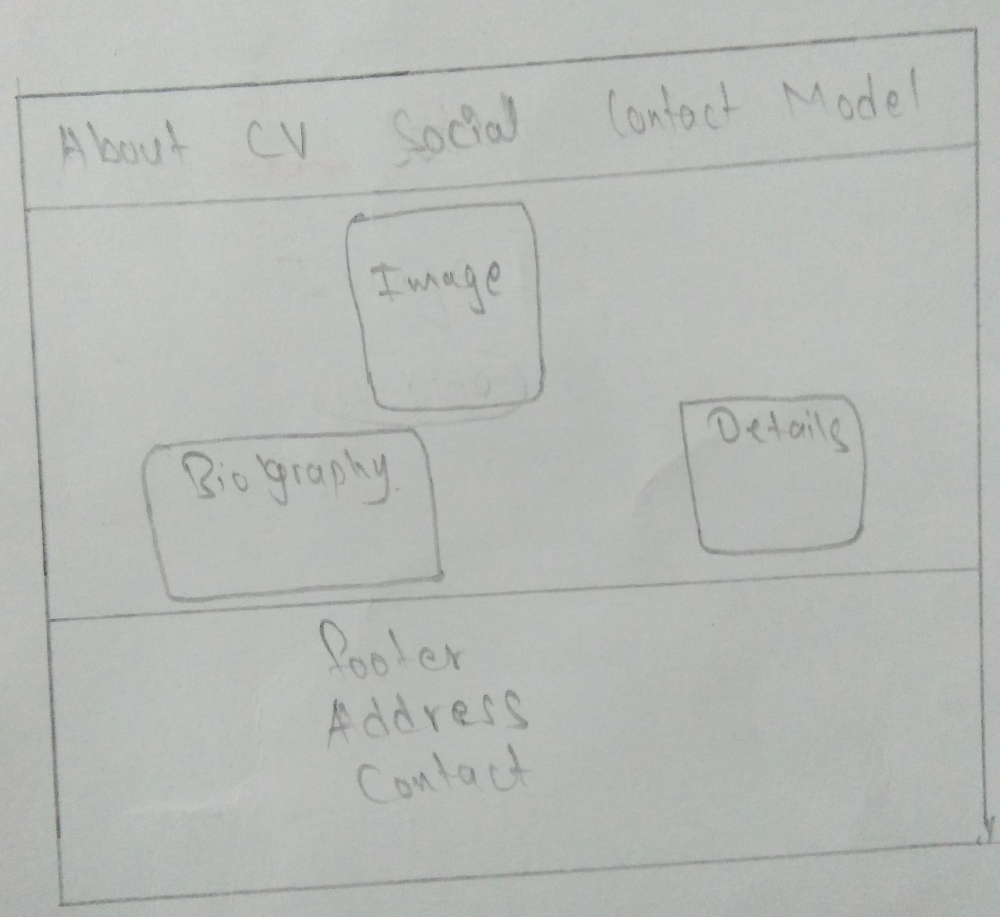

SCREENSHOTS OF DIFFERENT PERSONAL WEBSITES
1.
2.
3.
4.
EXPERIENCE
When the first time, I heard about webpage and I was going to learn it on Information Technology. I was shocked I had not any ideas about it, so I was shocked. When you did not have any knowledge and you try to get the knowledge without interest then you just lost yourself and not able to control yourself at that movement.
I was feeling that type of situation for 4 weeks. Before my first term started, I just spent my time by thinking that I could not able to make or develop the web page. At that time, I was on my own thought and thinking all the time that, that did I really made a mistake by joining Information Technology or not.
And I was totally unable to control my mind by avoiding negative thinking. I decided to make myself comfort and I just started to visit with teachers and spoken with family members. And tried to avoid the problem with my thought. Somehow, after 5 weeks first term started, I just started to research on websites and I felt title bit comfort after getting knowledge about it. I had not any materials or resources so at that time I felt really difficult without any resources
I was unable to get information but somehow, I just manage the resource which was available on college and I just utilized them and it was not enough. After some weeks all materials and resources were available to me but it was too late. So, I had not got enough knowledge on first term.
So that’s why my webpages are made as thought by getting some ideas from other developer’s websites due to lack of time. But next time, there will be change on my knowledge which will be enough to make next webpage project better than this webpage project.
PAGES VALIDATED EVIDENCE
1. Index.html
2. About.html
3. CV.html
4. Social.html
5. Contact.html
6. Report.html
7. web.css
WIREFRAMES OF WEBPAGES
1. index page
2.about page

3. cv page
4. social page
5. contact page